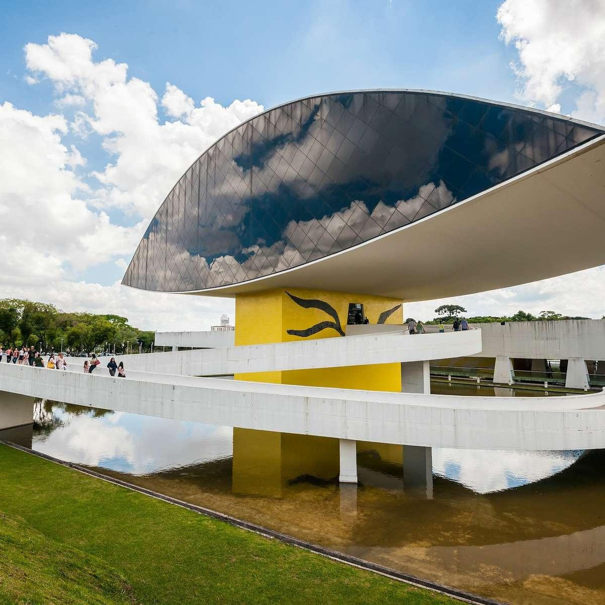

Museu Oscar Niemeyer
Conhecido como Museu do Olho, o Museu Oscar Niemeyer é um dos principais espaços culturais de Curitiba. Apresenta exposições de arte, arquitetura e design, além de possuir uma arquitetura marcante.
Centro Cívico - Curitiba